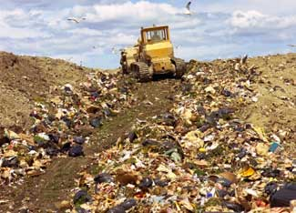

ISTOCKPHOTO
Waste management companies have more waste to process and fewer workers to handle the load, at the same time that the monetary return for raw materials is plummeting — and some people are concerned that all this means their recyclables might be headed to the landfill.